Async Rust
the finale: futures, .await, tokio, and overlapping every wait.
Why async
Book · Ch 17Your program spends its life waiting. This chapter puts a clock on that waiting, then shows the same five requests running 4.8x faster on a single thread.
Mostly waiting
Here is one network call. Your program asks for a cat fact, and then it waits, about a second. Of that second, the CPU work is about a millisecond. The rest is your program sitting still.
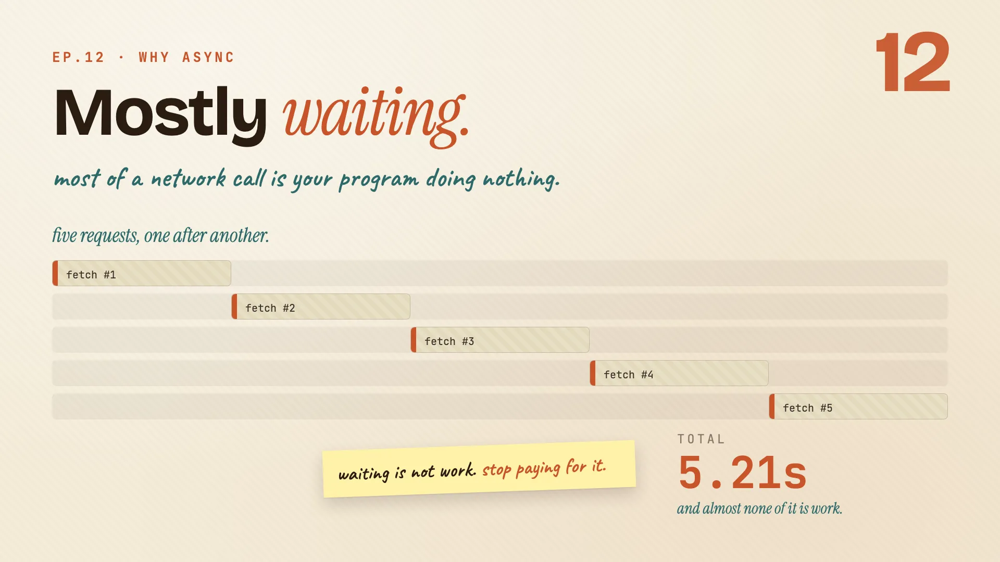
- Waiting dominates. Roughly 1ms of work against roughly 999ms of waiting, per request.
- Do it five times in a row and that is 5.21 seconds of your life, and almost none of it is work.
- Async is how you stop paying for the waiting.
Remember: waiting is not work. stop paying for it.
One after another
This is the naive program: one fetch function, called five times in a loop, each turn waiting for the last.
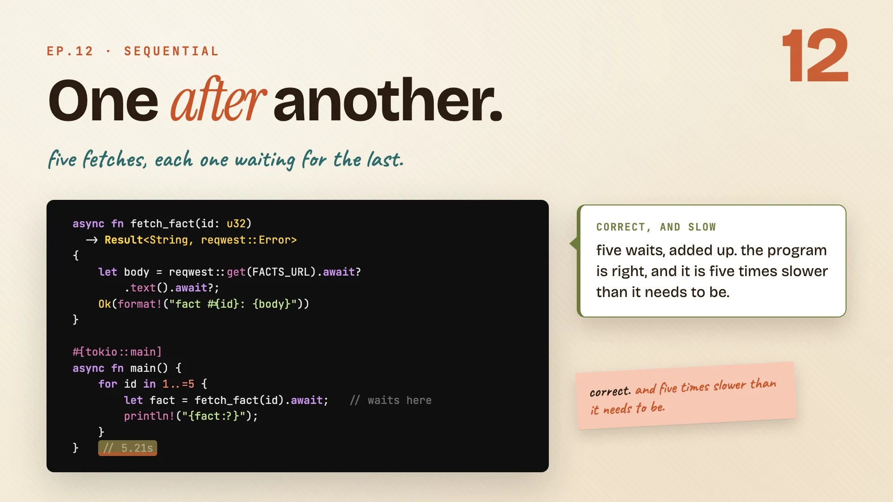
async fn fetch_fact(id: u32)
-> Result<String, reqwest::Error>
{
let body = reqwest::get(FACTS_URL).await?
.text().await?;
Ok(format!("fact #{id}: {body}"))
}
#[tokio::main]
async fn main() {
for id in 1..=5 {
let fact = fetch_fact(id).await; // waits here
println!("{fact:?}");
}
} // 5.21s
- The
.awaitinside the loop is the blocking line. Stop here; nothing else happens until the fact arrives. - Five requests, five waits, 5.21 seconds. The program is right, and it is five times slower than it needs to be.
Remember: correct, and five times slower than it needs to be.
Two timelines
The same five requests, arranged two ways. Sequential: each bar starts only when the one above it finishes. Concurrent: all five start together, because waiting is the one thing that stacks.
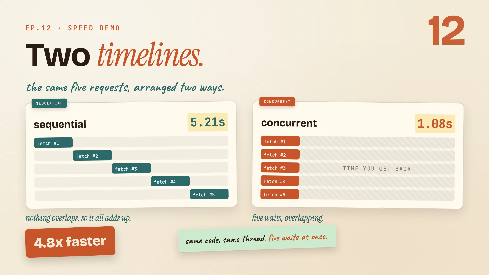
| Shape | Wall clock |
|---|---|
| sequential, one wait after another | 5.21s |
| concurrent, five waits overlapping | 1.08s |
- 4.8x faster. Same code, same requests, same single thread.
- That is the whole episode in one picture.
Remember: same code, same thread. five waits at once.
Threads vs tasks
Last episode you spawned threads, so a fair question: why not spawn five threads and call it done? Because a thread and a task are not the same tool.
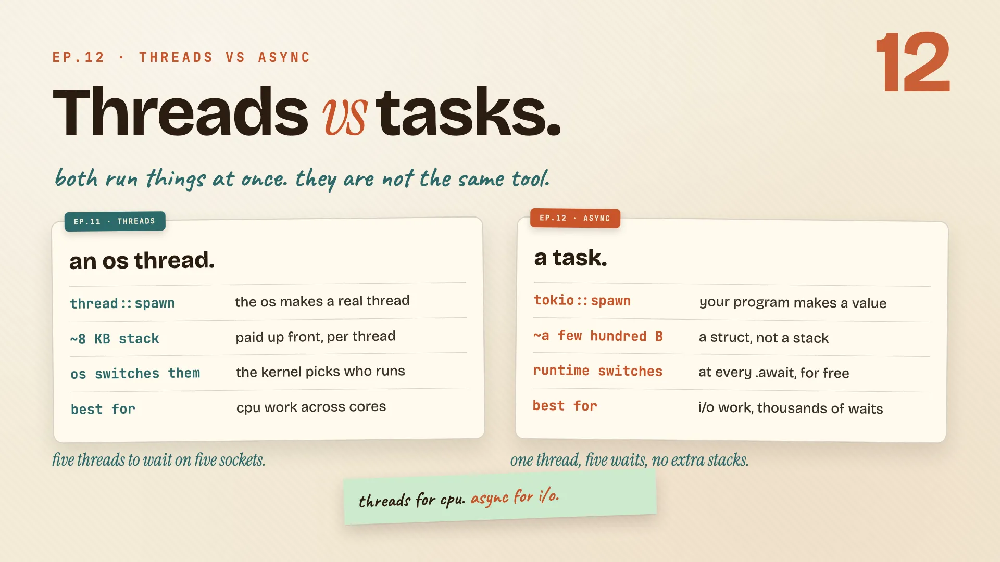
| An OS thread (ep.11) | A task (ep.12) |
|---|---|
thread::spawn, the OS makes a real thread |
tokio::spawn, your program makes a value |
| ~8 KB stack, paid up front, per thread | ~a few hundred bytes, a struct, not a stack |
| the kernel picks who runs | the runtime switches at every .await, for free |
| best for CPU work across cores | best for I/O work, thousands of waits |
- A waiting task costs nothing. Thousands fit on one thread.
- Threads split CPU work. Async overlaps waiting. Most servers need the second one.
Remember: threads for cpu. async for i/o.
async and .await
Book · §17.1Two keywords, one new mental model: an async fn hands back a plan, not an answer, and .await marks the spots where that plan can pause.
The async keyword
One keyword. Put async in front of fn, and the function changes what it hands back.
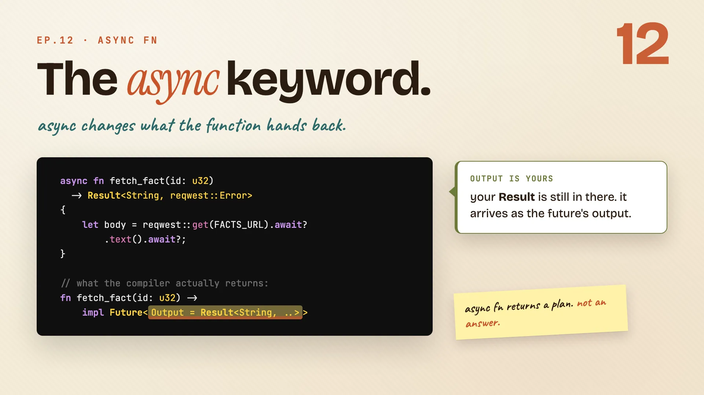
async fn fetch_fact(id: u32)
-> Result<String, reqwest::Error>
{
let body = reqwest::get(FACTS_URL).await?
.text().await?;
}
// what the compiler actually returns:
fn fetch_fact(id: u32) ->
impl Future<Output = Result<String, ..>>
- You wrote
Result<String, ..>, but calling this does not give you a Result. It gives you a future that will produce one. - Your Result is still in there: it arrives as the future's
Output. - async is a promise about later. The body has not run yet.
Remember: async fn returns a plan, not an answer.
Where it pauses
Inside the function there are two waits: one for the response, one for the text. .await marks a spot the function can stop at.
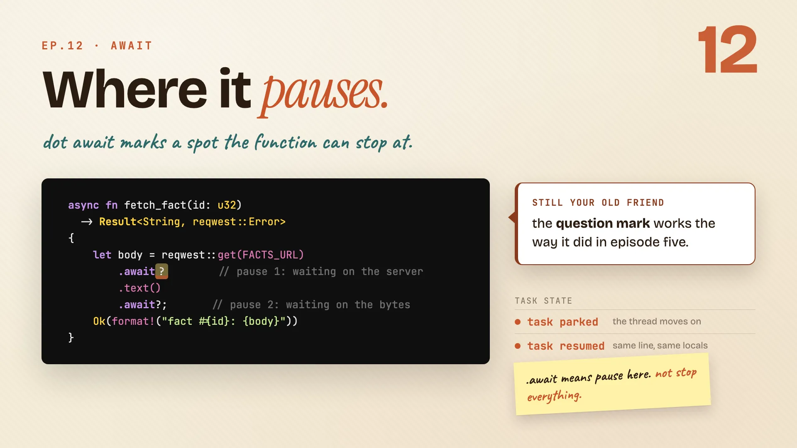
async fn fetch_fact(id: u32)
-> Result<String, reqwest::Error>
{
let body = reqwest::get(FACTS_URL)
.await? // pause 1: waiting on the server
.text()
.await?; // pause 2: waiting on the bytes
Ok(format!("fact #{id}: {body}"))
}
- The first
.awaitsays: the server has not answered yet, so put me down and run something else. The task is parked; the thread moves on. - When the bytes arrive, the runtime picks the function back up on the exact line it stopped on, same locals and all.
- The
?still works the way it did in episode five. Errors go up.
Remember: .await means pause here, not stop everything.
Nothing runs yet
This line looks like it starts a network request. It does not. Nothing has left your computer.
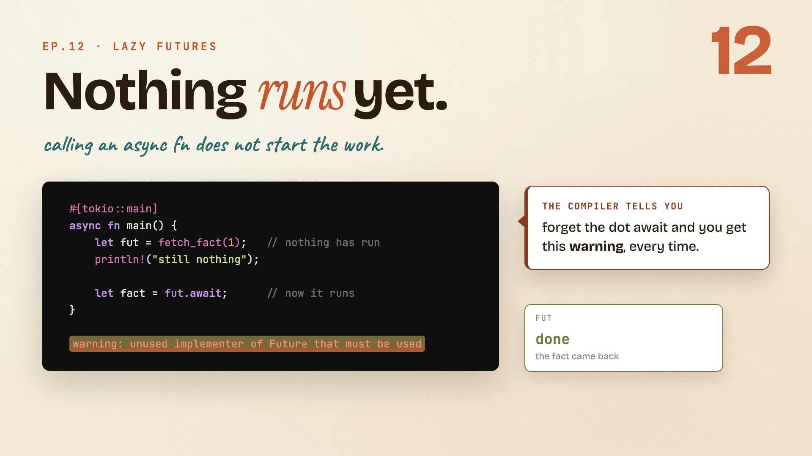
#[tokio::main]
async fn main() {
let fut = fetch_fact(1); // nothing has run
println!("still nothing");
let fact = fut.await; // now it runs
}
// warning: unused implementer of `Future` that must be used
- In other languages the call would already be in flight. In Rust you are holding a value that has not started.
- The work starts on the
.await, and not one moment before. That is what lazy means here. - Forget the await and the compiler tells you outright: futures do nothing unless awaited.
Remember: futures do nothing unless awaited.
Future is a trait
Future is not magic syntax. It is a trait, like the ones you wrote in episode six, with one real method on it.
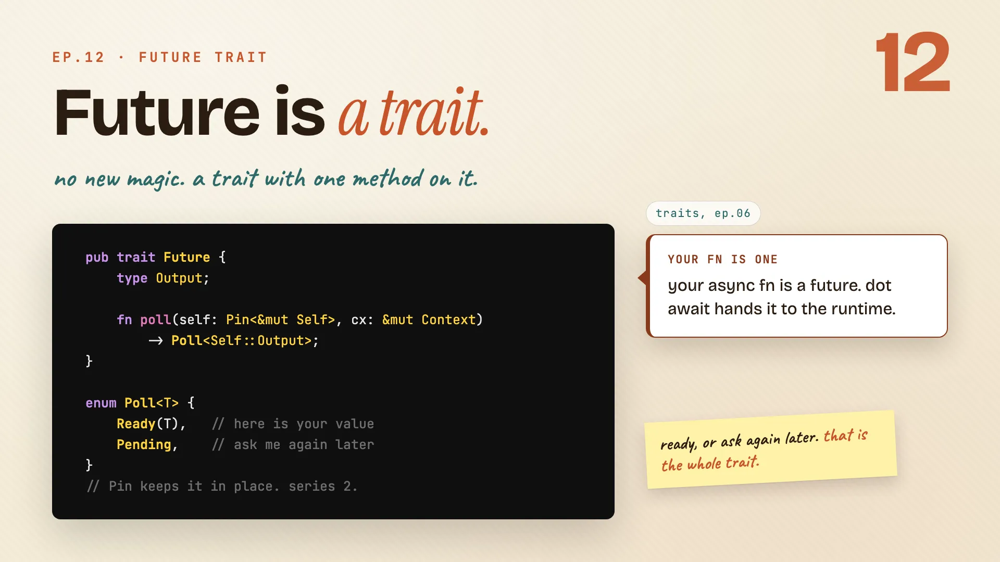
pub trait Future {
type Output;
fn poll(self: Pin<&mut Self>, cx: &mut Context)
-> Poll<Self::Output>;
}
enum Poll<T> {
Ready(T), // here is your value
Pending, // ask me again later
}
pollis the runtime asking one question: are you finished, or should I come back later?- The answer is one of two things:
Readywith your value inside, orPending. - Your async fn is a future.
.awaitis you handing it to the runtime to poll. (Pinkeeps it in place; next scene.)
Remember: ready, or ask again later. that is the whole trait.
A state machine
So what is the compiler actually building? Take your function and mark every .await in it. Each one is a place the function can stop, and the compiler turns the whole body into states.
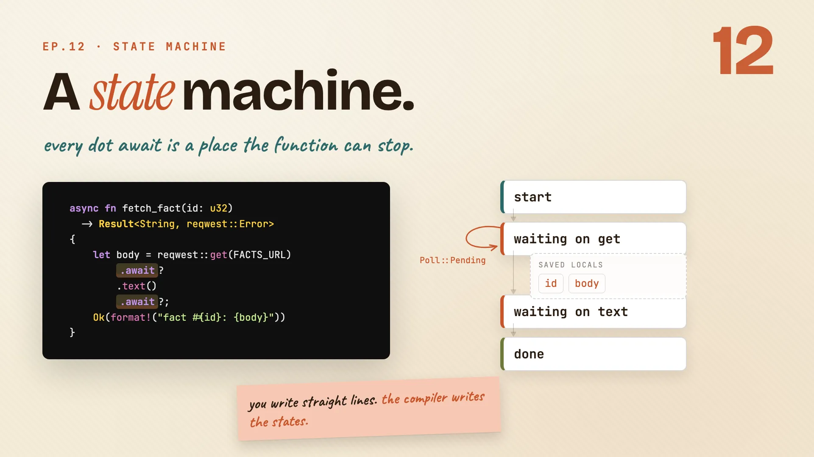
- The states for
fetch_fact: start, waiting onget, waiting ontext, done.pollreturningPendingloops on the waiting states. - The state holds your local variables (
id,body), so when it resumes the function still knows where it was. - You never write this. You write straight-line code and get the machine for free.
Remember: you write straight lines. the compiler writes the states.
It cannot move
Remember the state that held your locals? Sometimes one of those locals points at another one, and that is why Pin exists.
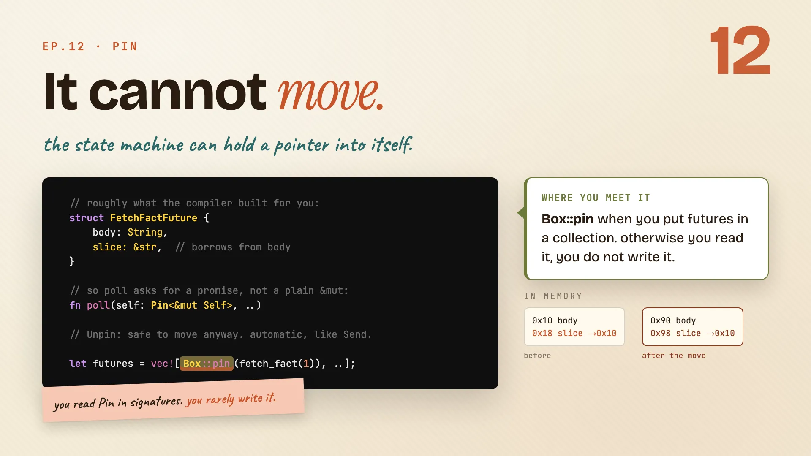
// roughly what the compiler built for you:
struct FetchFactFuture {
body: String,
slice: &str, // borrows from body
}
// so poll asks for a promise, not a plain &mut:
fn poll(self: Pin<&mut Self>, ..)
// Unpin: safe to move anyway. automatic, like Send.
let futures = vec![Box::pin(fetch_fact(1)), ..];
- Move that struct to a new address and the string moves with it, but the internal pointer does not. Broken.
Pinis the promise it will not move. A promise, not a lock.- Where you meet it: reading signatures, and
Box::pinwhen you put futures in a collection. You readPin; you rarely write it.
Remember: you read Pin in signatures. you rarely write it.
Runtimes
Tokio · tutorialSomebody has to poll the future, and Rust ships no one to do it. You pick a runtime. This chapter is the two errors that teach you why, and the two-line Tokio setup.
Two errors, day one
Try to await in a normal main, and the compiler stops you. Make main async, and it stops you again, for the opposite reason. Both errors show up before you have added a runtime.
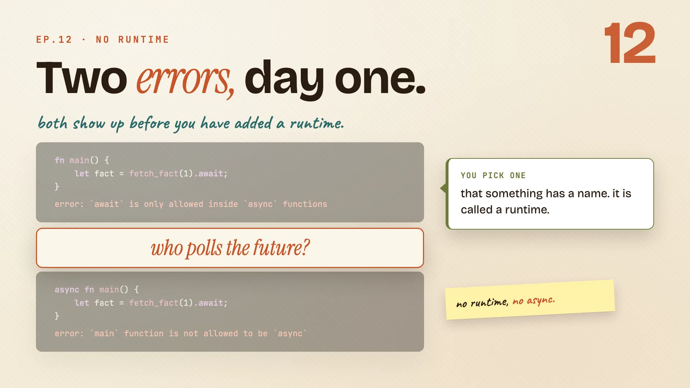
fn main() {
let fact = fetch_fact(1).await;
}
// error: `await` is only allowed inside `async` functions
async fn main() {
let fact = fetch_fact(1).await;
}
// error: `main` function is not allowed to be `async`
- The real question underneath both: who polls the future?
- Rust does not ship that something. You pick it, and it is called a runtime.
Remember: no runtime, no async.
What a runtime is
A runtime is three jobs in one crate, and none of them are mysterious.
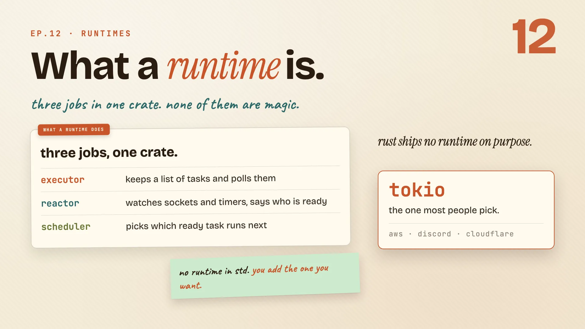
| Job | What it does |
|---|---|
| executor | keeps a list of tasks and polls them |
| reactor | watches sockets and timers, says which task is ready |
| scheduler | picks which ready task runs next, on which thread |
- Rust ships no runtime on purpose: a web server and a microcontroller need different ones.
- Tokio is the one most people pick, used by AWS, Discord, and Cloudflare.
Remember: no runtime in std. you add the one you want.
The tokio setup
Two steps, and your main can await. First the dependency, with the full feature set while you are learning. Then one attribute above main.
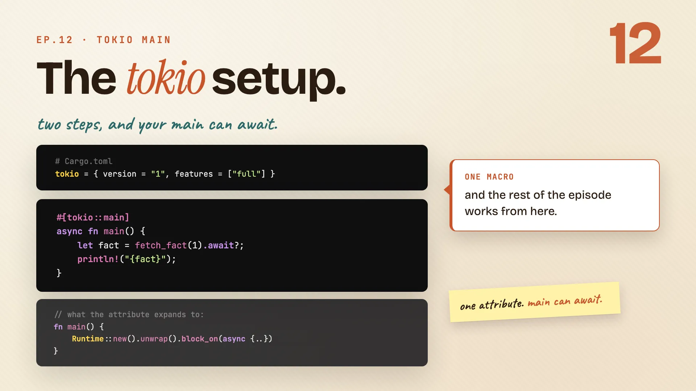
# Cargo.toml
tokio = { version = "1", features = ["full"] }
#[tokio::main]
async fn main() {
let fact = fetch_fact(1).await?;
println!("{fact}");
}
// what the attribute expands to:
fn main() {
Runtime::new().unwrap().block_on(async {..})
}
- The attribute is not new syntax. It wraps your body in a runtime and blocks on it.
- One macro, and the whole rest of the episode works.
Remember: one attribute. main can await.
The smallest wait
Sleeping is the smallest possible version of waiting, so it is the easiest place to see the difference between holding a thread and yielding it.
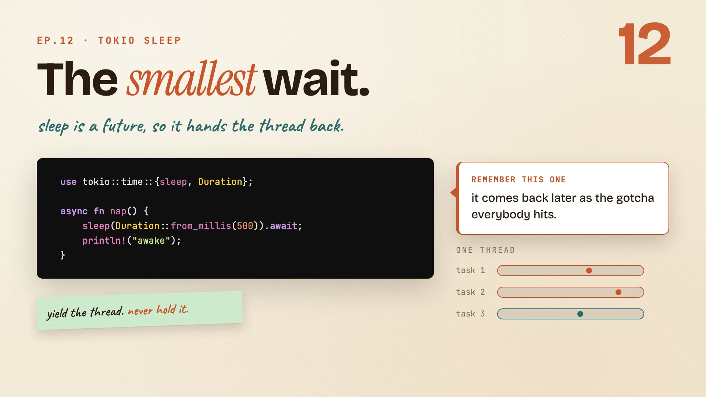
use tokio::time::{sleep, Duration};
async fn nap() {
sleep(Duration::from_millis(500)).await;
println!("awake");
}
- Tokio's sleep is a future.
.awaiton it and your task steps aside for half a second. - The thread is free that whole time. Other tasks run on it, and yours comes back when the timer fires.
- Remember this one. It comes back later as the gotcha everybody hits.
Remember: yield the thread. never hold it.
Concurrent tasks
Book · §17.2–17.3Many waits, one wall clock. Join a fixed pair, join a whole batch, spawn background tasks, connect them with channels, race them, and give them deadlines.
Both at once
Here is the slow way, spelled out: two facts, two awaits, one after the other, 2.10s. The join macro takes both futures at once and awaits them together.
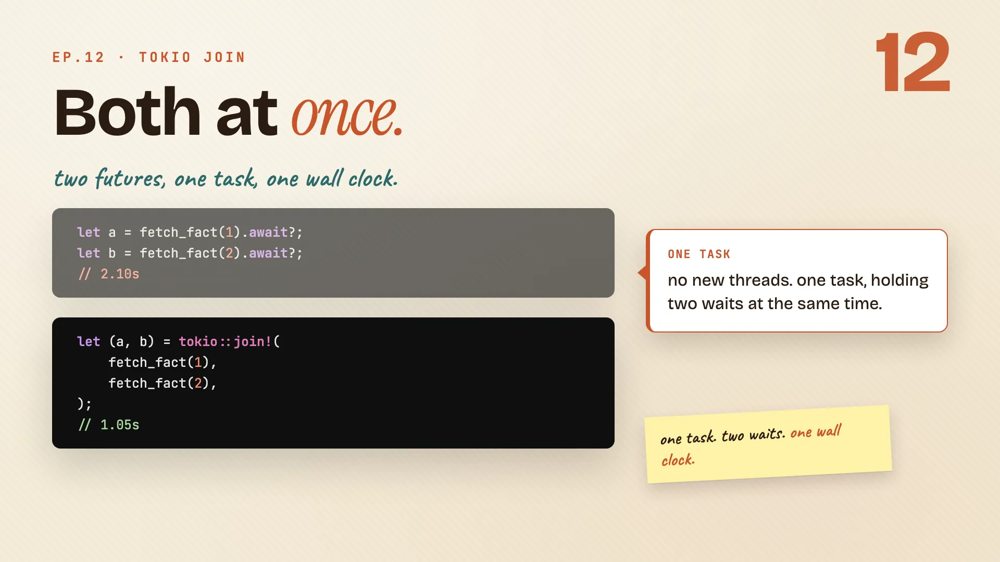
let a = fetch_fact(1).await?;
let b = fetch_fact(2).await?;
// 2.10s
let (a, b) = tokio::join!(
fetch_fact(1),
fetch_fact(2),
);
// 1.05s
- You get a tuple back, in the order you asked for, and it finishes when the slower one finishes.
- No new threads. One task, holding two waits at the same time.
Remember: one task. two waits. one wall clock.
Drive them all
The join macro is for a fixed handful. When the count is a number you compute, you need join_all.
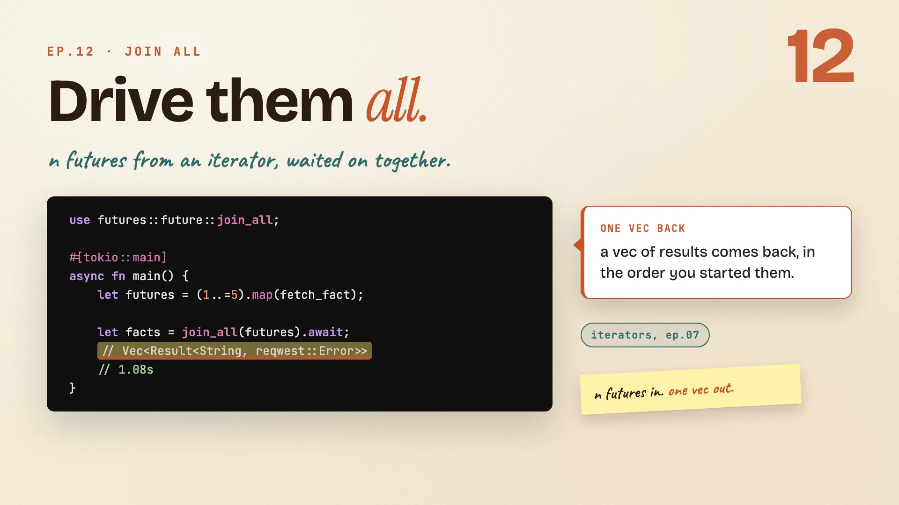
use futures::future::join_all;
#[tokio::main]
async fn main() {
let futures = (1..=5).map(fetch_fact);
let facts = join_all(futures).await;
// Vec<Result<String, reqwest::Error>>
// 1.08s
}
- Map over the ids and call
fetch_facton each. Nothing runs yet; this is a collection of plans (iterators, ep.07). join_alldrives every one of them to the end.- One vec of results comes back, in the order you started them.
Remember: n futures in. one vec out.
Start it, walk away
join! waits right here. Sometimes you want the work started and your code to keep going. tokio::spawn hands the future to the runtime as its own task.
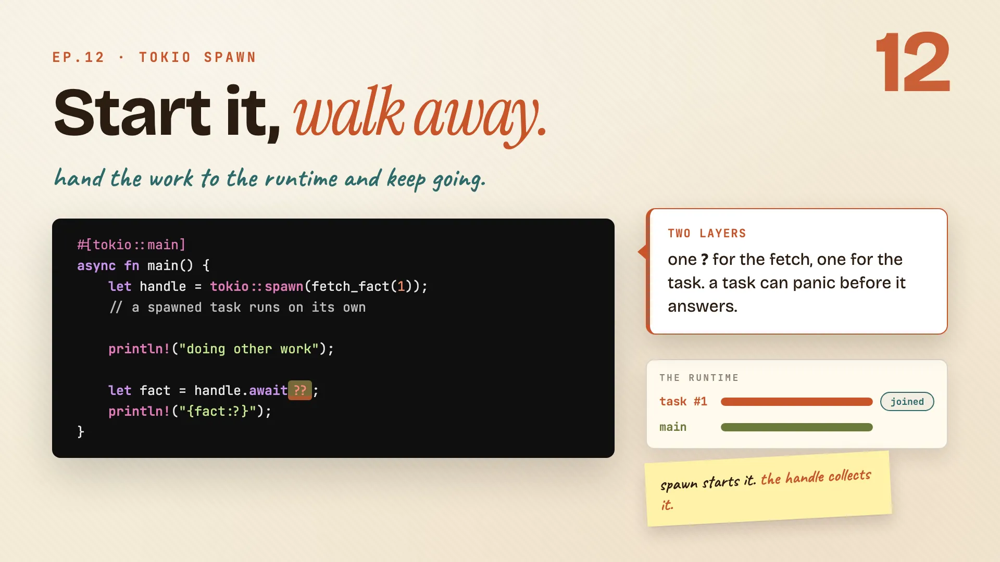
#[tokio::main]
async fn main() {
let handle = tokio::spawn(fetch_fact(1));
// a spawned task runs on its own
println!("doing other work");
let fact = handle.await??;
println!("{fact:?}");
}
- It starts immediately, whether you are watching or not. Unlike a bare future, a spawned task runs on its own.
- You get back a handle. Do your other work, then await the handle when you actually need the answer.
- Two question marks: one for the fetch, one for the task itself, which could have panicked before it answered.
Remember: spawn starts it. the handle collects it.
Join vs spawn
You have two ways to run things at once now, and they are not the same tool. Pick by how long the work lives.
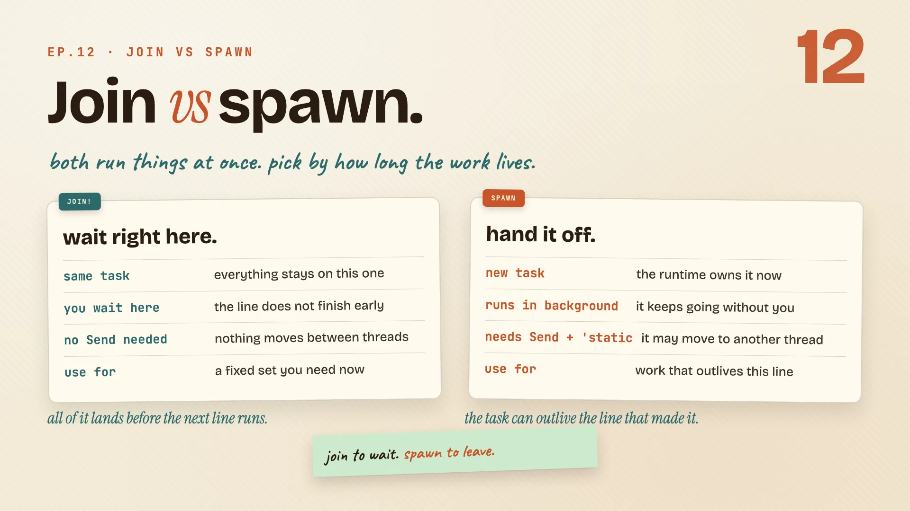
join!, wait right here |
spawn, hand it off |
|---|---|
| same task, everything stays on this one | new task, the runtime owns it now |
| you wait here, the line does not finish early | runs in background, keeps going without you |
no Send needed, nothing moves between threads |
needs Send + 'static, it may move threads |
| use for: a fixed set you need now | use for: work that outlives this line |
Remember: join to wait. spawn to leave.
Tasks that talk
You sent messages between threads in episode eleven. Tasks do the same thing, with an await on it. This is also where async move earns its keep.
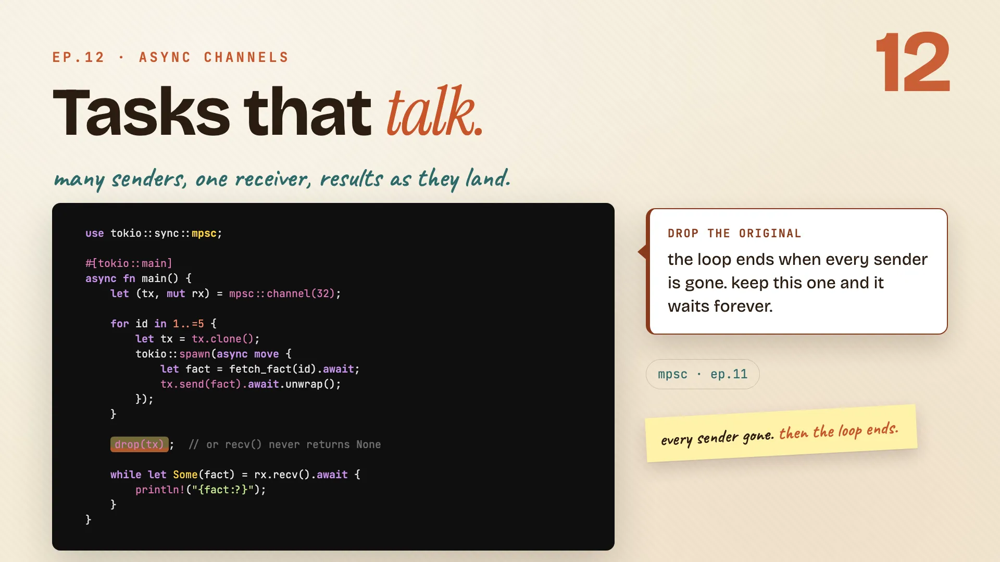
use tokio::sync::mpsc;
#[tokio::main]
async fn main() {
let (tx, mut rx) = mpsc::channel(32);
for id in 1..=5 {
let tx = tx.clone();
tokio::spawn(async move {
let fact = fetch_fact(id).await;
tx.send(fact).await.unwrap();
});
}
drop(tx); // or recv() never returns None
while let Some(fact) = rx.recv().await {
println!("{fact:?}");
}
}
- The channel has a buffer (32), and sending waits for room:
sendis a future too. async movehands each task its own clone of the sender, so it owns what it uses.- Drop the original sender or the loop below waits forever, the same trip-up as episode eleven.
Remember: every sender gone, then the loop ends.
First one wins
join! waits for everything. Sometimes you only want whichever answer arrives first. select! takes branches: each one is a future, and a body that runs if that future wins.
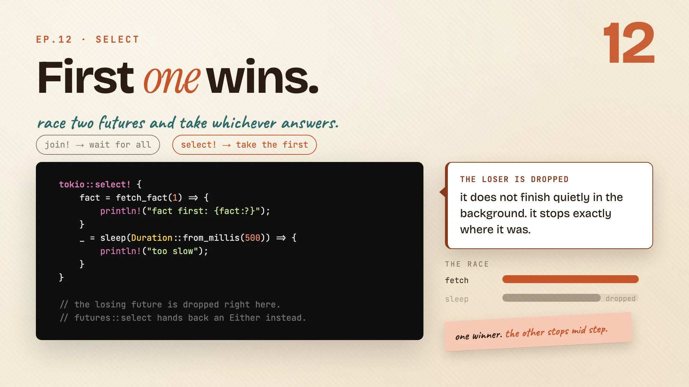
tokio::select! {
fact = fetch_fact(1) => {
println!("fact first: {fact:?}");
}
_ = sleep(Duration::from_millis(500)) => {
println!("too slow");
}
}
// the losing future is dropped right here.
// futures::select hands back an Either instead.
- Here the fetch races a half-second sleep. Whichever finishes first runs its body.
- The loser is dropped where it stands. It does not finish quietly in the background. Cancellation surprises people; expect it.
Remember: one winner. the other stops mid step.
Give it a deadline
A request that never answers is worse than one that fails. You already have the parts: race the fetch against a sleep. That is exactly what Tokio's timeout is.
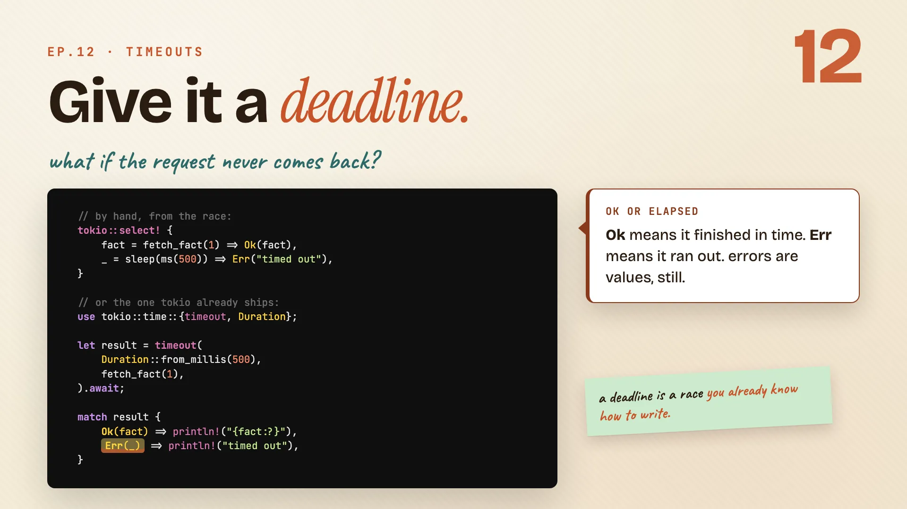
use tokio::time::{timeout, Duration};
let result = timeout(
Duration::from_millis(500),
fetch_fact(1),
).await;
match result {
Ok(fact) => println!("{fact:?}"),
Err(_) => println!("timed out"),
}
- One call: a duration, and the future you want to limit.
- You get a
Result.Okmeans it finished in time,Errmeans it ran out. Errors are values, still.
Remember: a deadline is a race you already know how to write.
Nobody preempts you
Async is cooperative. A task keeps the thread until it hits an await, and not one moment sooner. So a loop with no await inside it never lets go.
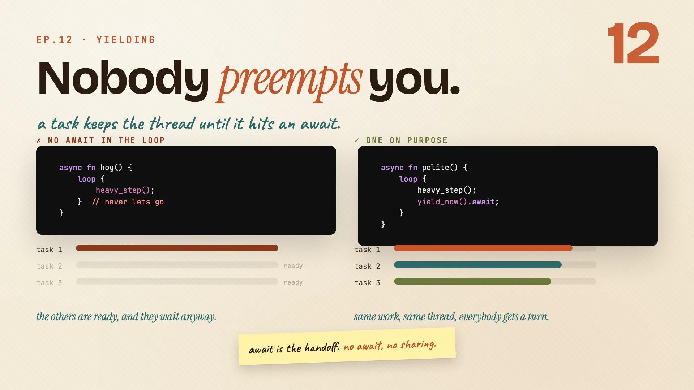
async fn hog() {
loop {
heavy_step();
} // never lets go
}
async fn polite() {
loop {
heavy_step();
yield_now().await;
}
}
- The other tasks are ready, and they wait anyway. One hog starves the whole lane.
yield_now()is an await that does nothing except hand the runtime back for a moment. Same work, same thread, and now everybody gets a turn.
Remember: await is the handoff. no await, no sharing.
The real demo
reqwest + tokioThe whole program, and the clock. Every piece already showed up once; now it is forty lines, one await, and 5.21s becoming 1.08s in a terminal.
The whole program
Here is the finished thing, top to bottom. One worker function, one shaping line in main, one await.
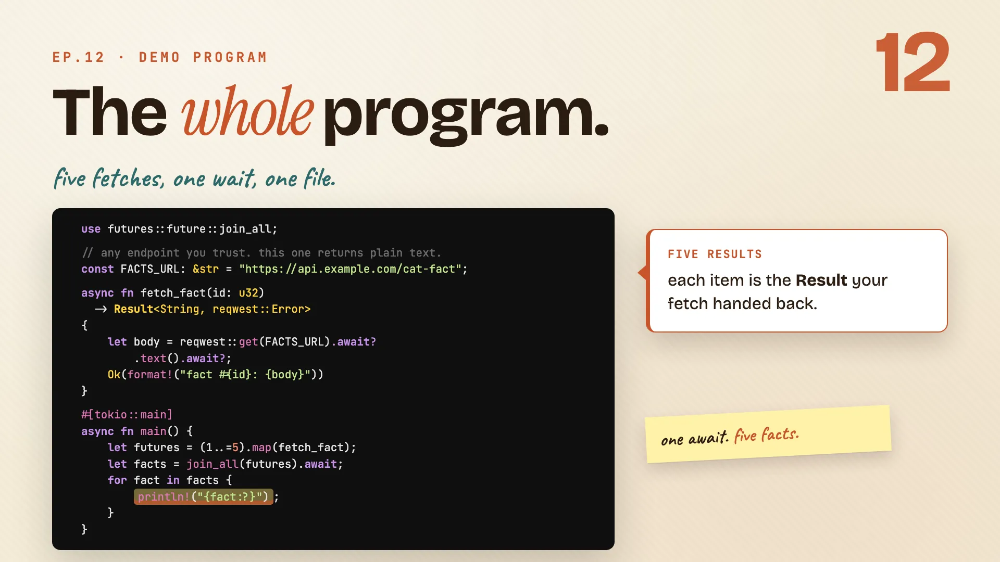
use futures::future::join_all;
// any endpoint you trust. this one returns plain text.
const FACTS_URL: &str = "https://api.example.com/cat-fact";
async fn fetch_fact(id: u32)
-> Result<String, reqwest::Error>
{
let body = reqwest::get(FACTS_URL).await?
.text().await?;
Ok(format!("fact #{id}: {body}"))
}
#[tokio::main]
async fn main() {
let futures = (1..=5).map(fetch_fact);
let facts = join_all(futures).await;
for fact in facts {
println!("{fact:?}");
}
}
- The worker: one async fn, two awaits inside, a Result coming out the other end.
- The shape lives in main: build five futures from the ids, hand the batch to
join_all, await once. - Each item you print is the
Resultyour fetch handed back.
Remember: one await. five facts.
Run it twice
Same five fetches, two shapes. Run the sequential version first and watch the facts land one at a time. Then the concurrent one: all five land together, in one burst.
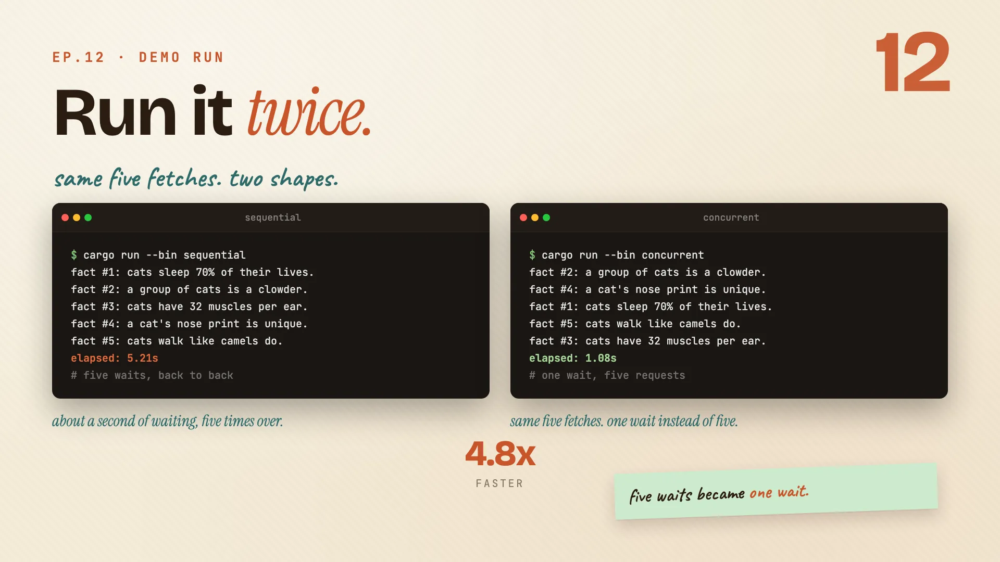
$ cargo run --bin sequential
fact #1 ... fact #5
elapsed: 5.21s # five waits, back to back
$ cargo run --bin concurrent
fact #2, #4, #1, #5, #3
elapsed: 1.08s # one wait, five requests
- 5.21 seconds: a second of waiting, five times over, exactly like the timeline said.
- 1.08 seconds, 4.8x faster. That is the whole point of the episode, on one screen. (Notice the concurrent facts arrive out of order.)
Remember: five waits became one wait.
One result at a time
join_all gives you everything at the end. Sometimes you want each result the moment it arrives. A stream is an iterator that awaits.
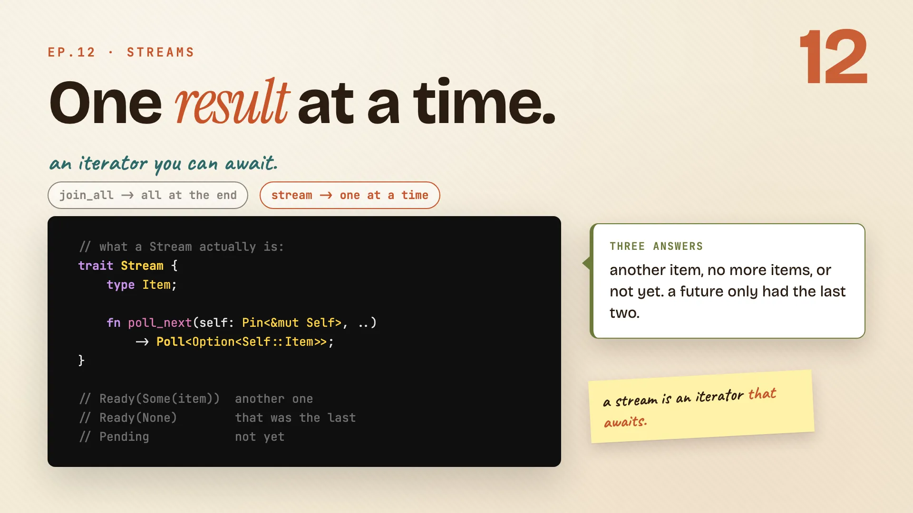
use futures::stream::{self, StreamExt};
let mut facts = stream::iter(1..=5)
.map(fetch_fact)
.buffer_unordered(5);
while let Some(fact) = facts.next().await {
println!("{fact:?}");
}
// what a Stream actually is:
// fn poll_next(..) -> Poll<Option<Self::Item>>
// Ready(Some(item)) / Ready(None) / Pending
buffer_unordered(5)says: run five at a time, and hand me each one as soon as it is done.- The loop reads like a normal
while let, with one await in it. Same idea as episode seven, plus a pause. - Three possible answers per poll: another item, no more items, or not yet. A future only had the last two.
Remember: a stream is an iterator that awaits.
Gotchas
Beyond the bookThe ones everybody hits once: blocking inside async, mixing runtimes, Send showing up in a task, async in traits, and knowing when not to use async at all.
Never block the lane
This is the mistake everybody makes once: a normal sleep, sitting inside an async function.
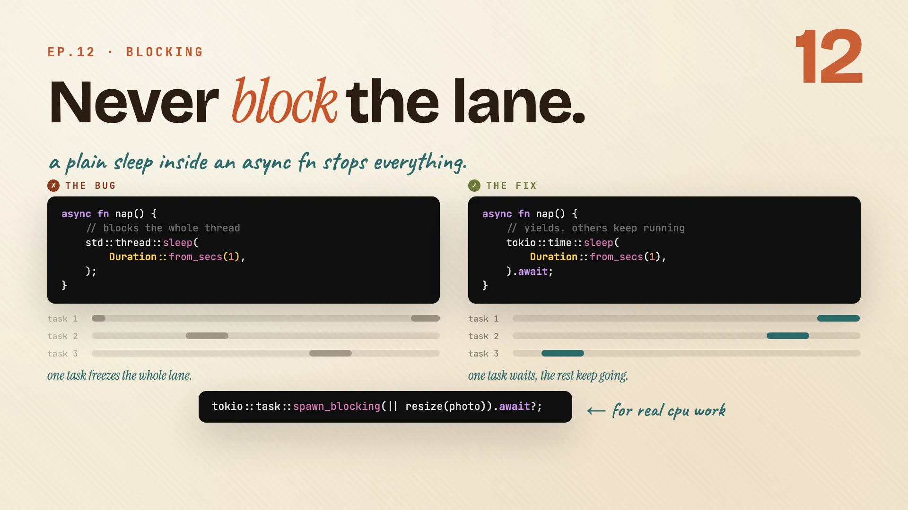
// the bug: blocks the whole thread
std::thread::sleep(Duration::from_secs(1));
// the fix for waiting: yields, others keep running
tokio::time::sleep(Duration::from_secs(1)).await;
// the fix for real cpu work:
tokio::task::spawn_blocking(|| resize(photo)).await?;
std::thread::sleepdoes not yield anything. It holds the thread for a full second, and every task parked on that thread stops with it. One task freezes the whole lane.- Tokio's sleep hands the thread back and the other tasks keep moving.
- For CPU work that cannot yield, hand it to
spawn_blockinginstead.
Remember: never block inside async. spawn_blocking for real cpu work.
One runtime only
Second gotcha: you copy an example that uses a different executor, and everything compiles fine. Then it panics at runtime, with a message that reads like nonsense until you know this.
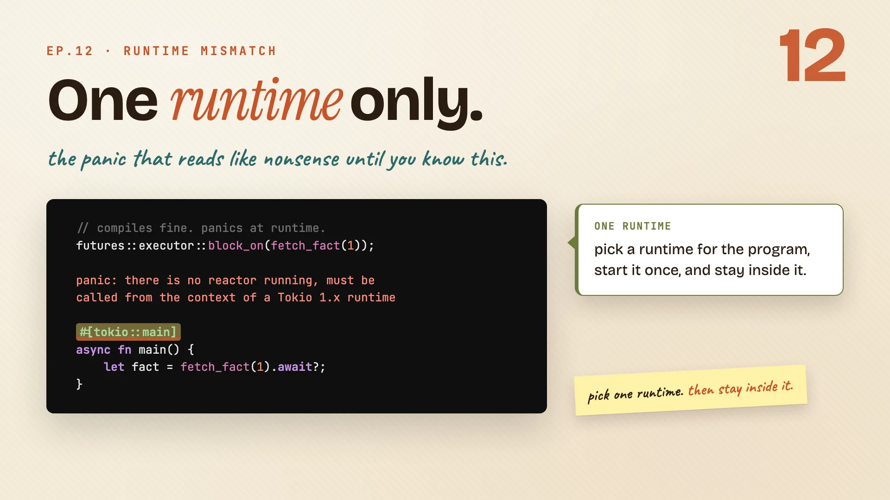
// compiles fine. panics at runtime.
futures::executor::block_on(fetch_fact(1));
// panic: there is no reactor running, must be
// called from the context of a Tokio 1.x runtime
// the fix:
#[tokio::main]
async fn main() {
let fact = fetch_fact(1).await?;
}
- The future came from Tokio. It wants Tokio's reactor to watch its socket, and that executor does not have one.
- Pick a runtime for the program, start it once, and stay inside it.
Remember: pick one runtime. then stay inside it.
Tasks must be Send
You met Send and Sync last episode. They show up here in one specific place: the bound on tokio::spawn.
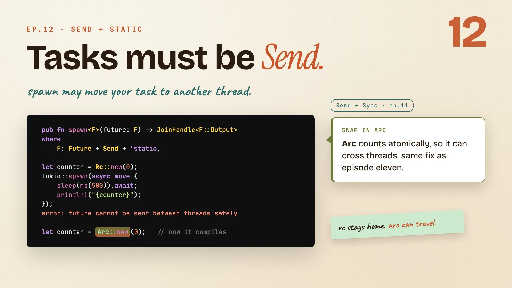
pub fn spawn<F>(future: F) -> JoinHandle<F::Output>
where
F: Future + Send + 'static,
let counter = Rc::new(0);
tokio::spawn(async move {
sleep(ms(500)).await;
println!("{counter}");
});
// error: future cannot be sent between threads safely
let counter = Arc::new(0); // now it compiles
- spawn may move your task to another thread, so everything it holds across an await has to be safe to move.
- An
Rcheld across the await fails. Swap it for anArcand it compiles: the same fix as episode eleven.
Remember: rc stays home. arc can travel.
Traits want async
One last rough edge. You will want an async function inside a trait, and since Rust 1.75 that compiles. What it will not do is work behind a dyn trait object.
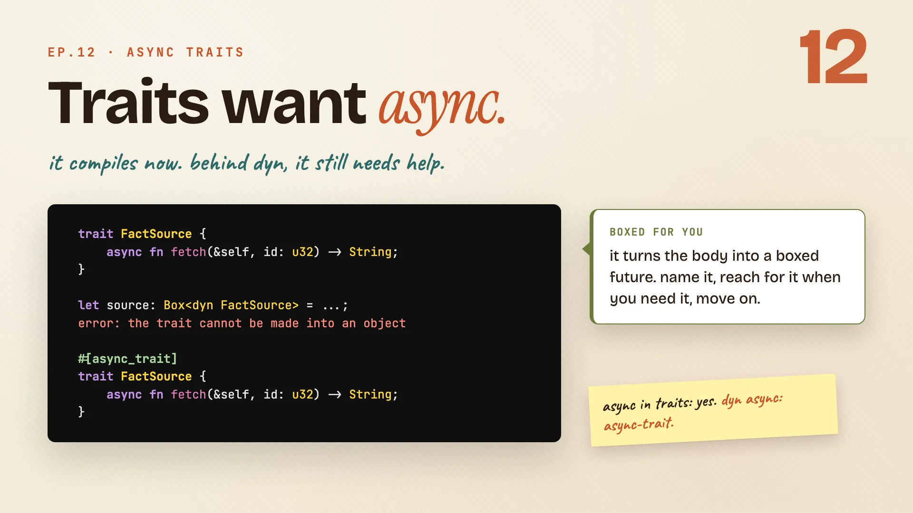
trait FactSource {
async fn fetch(&self, id: u32) -> String;
} // works since Rust 1.75
let source: Box<dyn FactSource> = ...;
// error: the trait cannot be made into an object
#[async_trait] // the workaround
trait FactSource {
async fn fetch(&self, id: u32) -> String;
}
- When you need the trait object, the
async-traitcrate rewrites the method for you, turning the body into a boxed future. - Name it, reach for it when you need it, move on.
Remember: async in traits: yes. dyn async: async-trait.
When to go async
The closing decision, and the last teaching table of Series 1. Three rows, one question: what is your program doing while it waits?
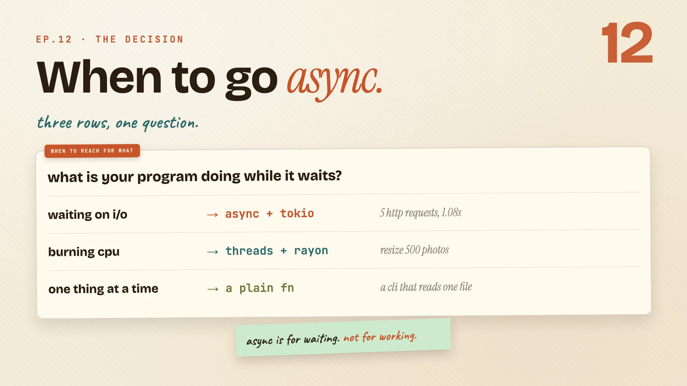
| What it's doing | Reach for | Example |
|---|---|---|
| waiting on i/o | async + tokio | 5 http requests, 1.08s |
| burning cpu | threads + rayon | resize 500 photos |
| one thing at a time | a plain fn | a cli that reads one file |
- Waiting on the network, a disk, another service? Async: one thread, hundreds of open waits.
- Real math across cores? Threads, and everything from episode eleven still applies.
- Fast enough already? A plain function. No runtime needed.
Remember: async is for waiting. not for working.
The whole episode, and the series close, in one line:
Threads for CPU. Async for I/O. Await without blocking: that is the modern Rust pattern.
Cheatsheet recap
One line per idea, in order. Skim this when you just need the reminder.
| Idea | Remember |
|---|---|
| Mostly waiting | waiting is not work. stop paying for it. |
| One after another | correct, and five times slower than it needs to be. |
| Two timelines | same code, same thread. five waits at once. |
| Threads vs tasks | threads for cpu. async for i/o. |
| The async keyword | async fn returns a plan, not an answer. |
| Where it pauses | .await means pause here, not stop everything. |
| Nothing runs yet | futures do nothing unless awaited. |
| Future is a trait | ready, or ask again later. that is the whole trait. |
| A state machine | you write straight lines. the compiler writes the states. |
| It cannot move | you read Pin in signatures. you rarely write it. |
| Two errors, day one | no runtime, no async. |
| What a runtime is | no runtime in std. you add the one you want. |
| The tokio setup | one attribute. main can await. |
| The smallest wait | yield the thread. never hold it. |
| Both at once | one task. two waits. one wall clock. |
| Drive them all | n futures in. one vec out. |
| Start it, walk away | spawn starts it. the handle collects it. |
| Join vs spawn | join to wait. spawn to leave. |
| Tasks that talk | every sender gone, then the loop ends. |
| First one wins | one winner. the other stops mid step. |
| Give it a deadline | a deadline is a race you already know how to write. |
| Nobody preempts you | await is the handoff. no await, no sharing. |
| The whole program | one await. five facts. |
| Run it twice | five waits became one wait. |
| One result at a time | a stream is an iterator that awaits. |
| Never block the lane | never block inside async. spawn_blocking for real cpu work. |
| One runtime only | pick one runtime. then stay inside it. |
| Tasks must be Send | rc stays home. arc can travel. |
| Traits want async | async in traits: yes. dyn async: async-trait. |
| When to go async | async is for waiting. not for working. |
Practice: no Rustlings folder for this one. Rebuild the five-fetch demo from memory instead, then time both shapes. Series 2 picks up from here.